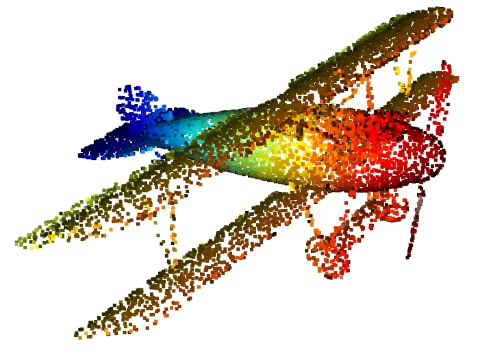
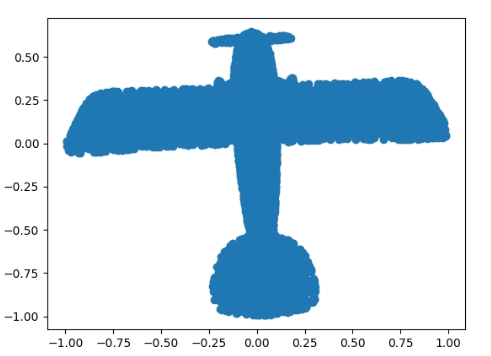
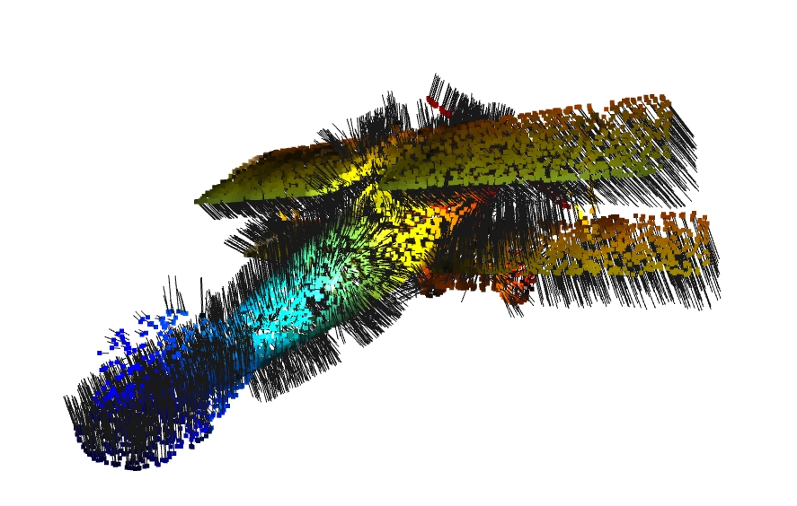

输入：m个中心化的n维向量，$\tilde{X}=[\tilde{x}_1,\tilde{x}_2,…,\tilde{x}_m], \tilde{x}_i=x_i-\overline{x},i=1,…,m$。
输出：k个n维向量，代表着m个里面最主要的k个。
结论: 第一个为$\tilde{X}$对应特征值最大的特征向量，第二个为$\tilde{X}$对应特征值第二大的特征向量，以此类推1
证明过程
现在有m个n维向量，n维是用列来表示，$\tilde{X}=[\tilde{x}_1,\tilde{x}_2,…,\tilde{x}_m], \tilde{x}_i=x_i-\overline{x},i=1,…,m$ ， $\overline{x}=\frac{1}{m}\Sigma_{i=1}^mx_i$。
PCA是获取投影到某一方向上$z$方差的最大值为目标，因为要尽可能多的呈现出所有的样本，代表样本的最主要成分，设某一维度信息投影到z轴的值为$\alpha_i=\tilde{x}^T_iz, i=1,2,…m$, 则投影的方差为
注意
因此
目标转换为求$\frac{1}{m}z^T\tilde{X}\tilde{X}^Tz$的最大值。
通过奇异值分解，我们有$XX^T=U\Sigma V^T(U\Sigma V^T)^T=U\Sigma^2U^T$
其中，$\Sigma=diag(\lambda_1^2,…,\lambda_n^2)，\lambda_1>\lambda_2>…>\lambda_n$，当$z=u_1$，即$U_r$的第一列时，可以取得$z^T(\tilde{X}\tilde{X}^T)z$ 的最大值。
Proof:
设$H=\tilde{X}\tilde{X}^T$, 则根据Rayleigh 商（见附录），我们有
其中，
当即的第一列时，可以取得 的最大值。问题就是$z$取什么值，可以取得$H$的最大特征值。
我们知道
$\lambda_1>\lambda_2>…>\lambda_n$。如果要取得最大特征值$\lambda_1$, 只需要令除了$\lambda_1$ 之外的对应特征向量为0即可，只需要令$z=u_1$，即$U_r$的第一列时, 我们有
我们有
因此，当$z=u_1$时$(1)$式等号成立. $u_1$正是$\tilde{X}$最大特征值所对应的特征向量
当取得了第一个维度$z$的向量后，每一个向量都需要减去在$z$上的投影。$u_1^T\tilde{x}$代表$x$在$u_1$上的投影的长度，$u_1(u_1^T\tilde{x})$代表在$u_1$方向上的投影长度
则
因为各个特征向量是线性无关的，当然对$\tilde{X},n\times m$,做$SVD$分解，
其中$UU^T=I,VV^T=I，r$表示$\lambda$的个数，$u_i=[u_{i1},u_{i2},…,u_{in}]$，$v_i=[v_{i1},v_{i2},…,v_{in}]$。则根据(2)，
这也就是说，除去所有向量在$u_1$上的投影，剩下的一点没有变
说白了，数据已经被表示成以特征向量为基的表示方法，而各个特征向量是线性无关的，减去在$u_1$上面的投影，当然只有$u_1$被减掉，其它都是正交的，没有影响。
附录：
高代p288 定义3：
设A, B为数域P上的两个n级矩阵，如果可以找到数域P上的n级可逆矩阵X，使得
就说A相似于B。这里$X$是n组线性无关的正交基。
当B是实对称矩阵即$B= B^T$, 则$B^T=(X^{-1}AX)^T=X^TA^T(X^{-1})^T=B=X^{-1}AX$
我们有$X^T=X^{-1}$, 因此
谱定理：当B是实对称矩阵时，我们有
推理(Inference)与预测(Prediction)_deephub-CSDN博客很明显，因为B是实对称矩阵，所以$X^TX=X^{-1}X=I$
Rayleigh 商：
对于维度为$(n,1)$任意的$x$和实对称矩阵$A$，有
Proof:
又有
因此
从而$(1)$式得证。
SVD分解：参考刘建平博客【https://www.cnblogs.com/pinard/p/6251584.html】
完成对非方阵矩阵的分解
SVD也是对矩阵进行分解，但是和特征分解不同，SVD并不要求要分解的矩阵为方阵。假设我们的矩阵A是一个m×nm×n的矩阵，那么我们定义矩阵A的SVD为：
其中U是一个m×m的矩阵，Σ是一个m×n的矩阵，除了主对角线上的元素以外全为0，主对角线上的每个元素都称为奇异值，V是一个n×n的矩阵。U和V都是酉矩阵，即满足$U^TU=I, V^TV=I$。下图可以很形象的看出上面SVD的定义：

降维
给定一组数据$x_i\in R^n,i=1,2,…m$，利用PCA获得其最主要的$l$个成分$[z_1,z_2,…,z_l],z_j\in R^n$.
把$x_i$从n维压缩为$l$维
从主成分中重建$x_i$
举例：
把$n$个二维数据上的点，投影到数轴上，变成一维数据上的点

假设有一组二维的点$A$
通过奇异值分解，得到最大值对应的特征向量为$a=[\sqrt2/2;\sqrt2/2]$, 此特征向量就是新求出的坐标系。下面开始降维操作，即求出二维点在此坐标系下的投影（坐标是多少）
向量乘法：通常可以表示一个投影的关系，假设有一个点$b=[1,2]$，则$a\cdot b$代表$b$在$a$上的投影再乘以$a$的长度。在这里，$a$作为一个基，他的模长为1。因此$a\cdot b$就是$b$在$a$下的投影值
因此，可以通过
来计算所有的点在新坐标系的下的坐标。
应用实例
投影
本例子是一个把三维点云降维到二维平面的例子，也就是投影！
无论三维点云是如何偏转的（不和Z轴平行），我们都可以找出最主要的两个成分（特征向量），就找到了新的基底，然后做投影。
先随便去一个数据集找到一个点云文件，进行加载，下面的加载需要文件有六列
1 | import open3d as o3d |

1 | def PCA(data, correlation=False, sort=True): |
经过投影，其结果为

法向量
通过收集某一个点的附近点来近似一个平面，通过这几个点计算出来的前面两个主成分（特征向量）就可以几乎完全表达出平面的基（也就是说这几两个基就可以完全表达出这些点的分布情况了，显然因为他们本身被近似为一个平面），而第三个特征向量是需要垂直于前面两个特征向量的，因此几乎是垂直的，可以近似为此平面的法向量。就是这个点的法向量。
添加法向量点云
计算法向量的步骤：
- 选取一个点
- 计算其最近的几个点，这样可以比较好的近似平面
- 计算这几个点特征值最小的特征向量，就是法向量
1 | # 先建立一颗树 |